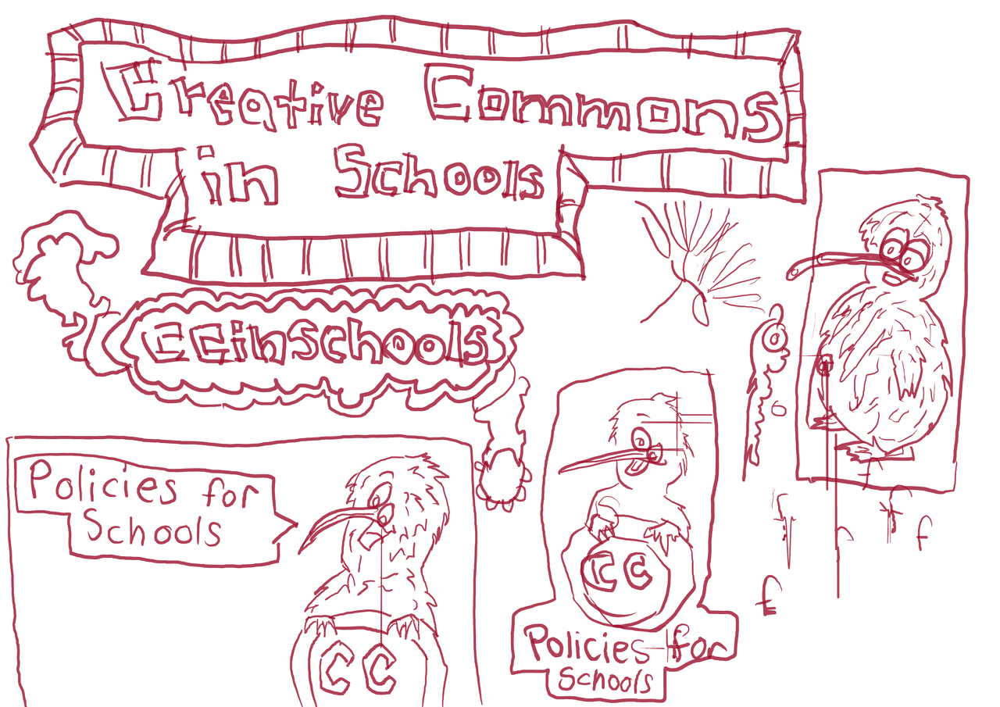
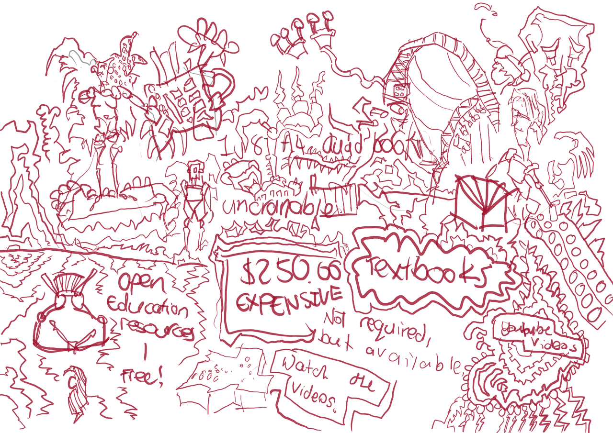
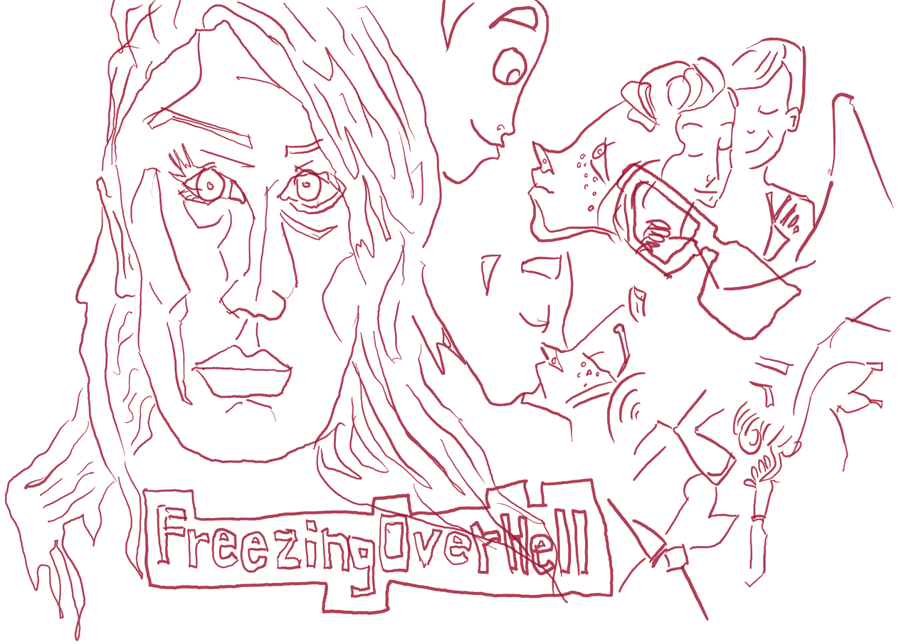
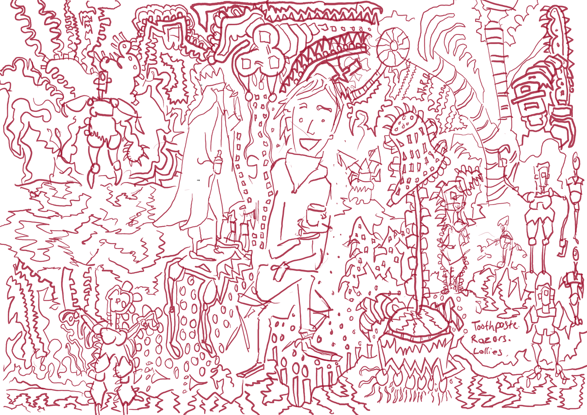
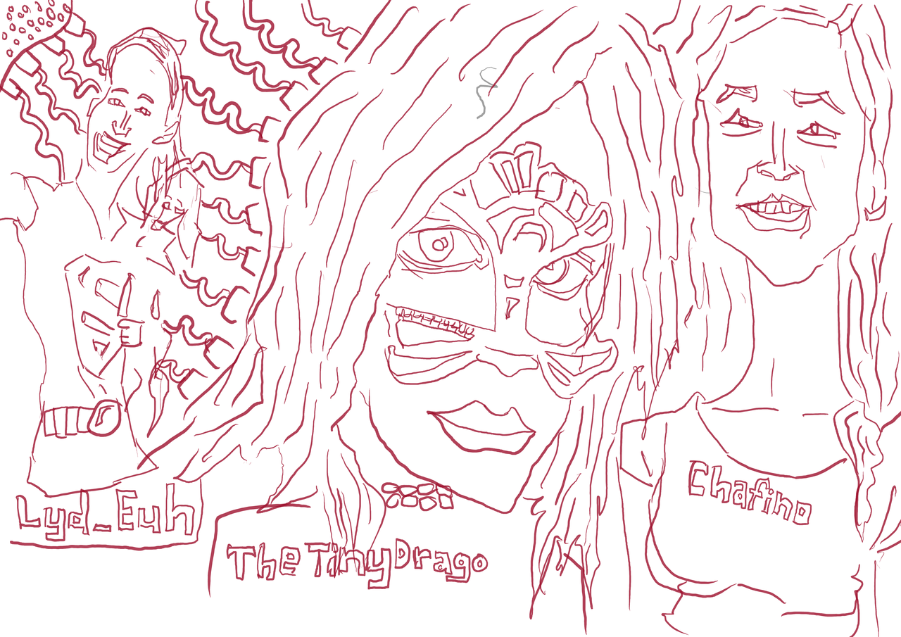
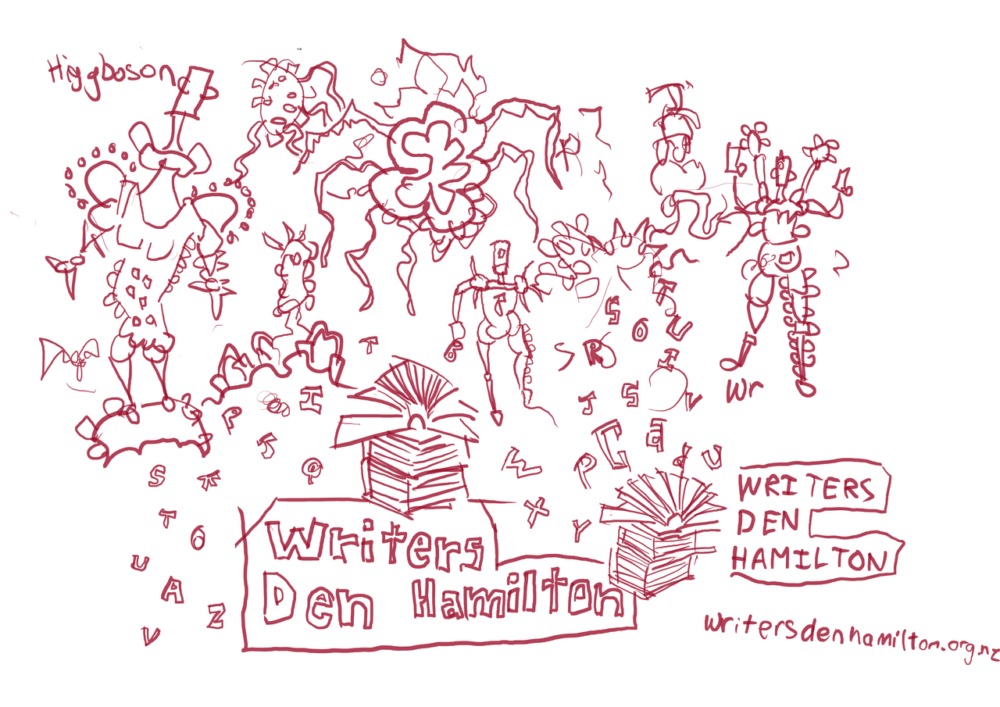
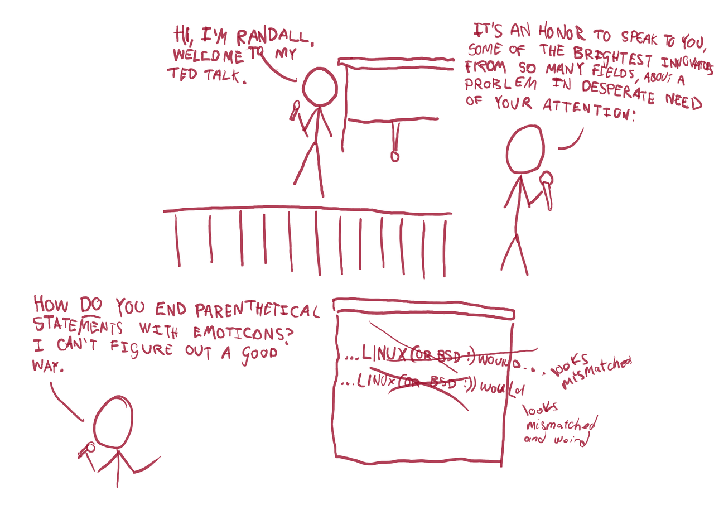

uni-crash
Art created with my new Raspberry Pi touch screen and Wacom tablet. It is awesome but slightly annoying to carry around. I need a 3d printer to print a case for it that would allow me to attach both the Wacom and Pi/Screen to my body (perhaps my right arm).
Some interesting reactions on the street to the setup. As I was crossing a Hamilton bridge a young Maori woman walked past, saw my setup and spoke 'wtf is that' to her friend. It's no different to an iPhone - it's only a computer at the end of the day.
Here's the art:

Matt made a post about the future of nzcommons so I was inspired to work on my fork of the site. It's a mess as I was working on a computer that was having issues with dependencies of Python. I need to work on it on my main laptop (Dell) which has no issues with dependencies.
I remixed elements of the cc in schools, including the Kiwi illustration. Comic started in the bottom left with the Kiwi speaking, 'Policies for Schools'.

These are notes on a lecture that I attended for an Engineering paper.

FreezingOverHell getsdrawn portrait on the left and a remix of one of Jems comics. This was from a panel of her Sunshine comic. Hot.

Drawn walking around Hamilton. Just sketches of landscapes.

Three portraits from getsdrawn. This of course breaks the 'don't draw multi people on the same page' rule, but I'm an expert at breaking getsdrawn rules.

WritersDenHamilton. I am happy with the current logo but maybe something with an illustration would be nice. Used the writers den Hamilton logo that the library uses to promote the group. They don't use my logo that I made for the group.

xkcd banned from conference. I have yet to be banned from a conference but it's something that could happen. Exciting. The original comic that I remixed from is xkcd: TED TALKS
Comments
Comments powered by Disqus